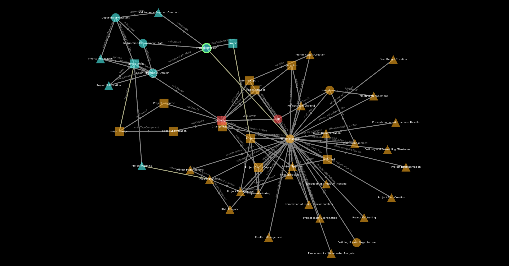
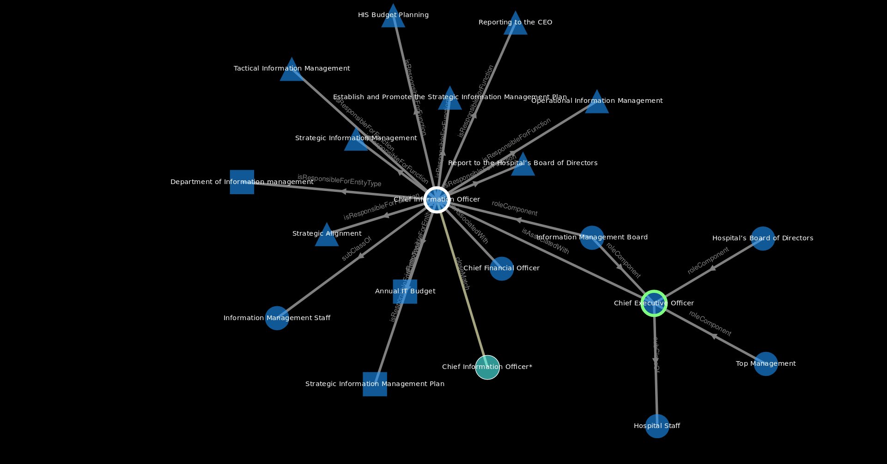
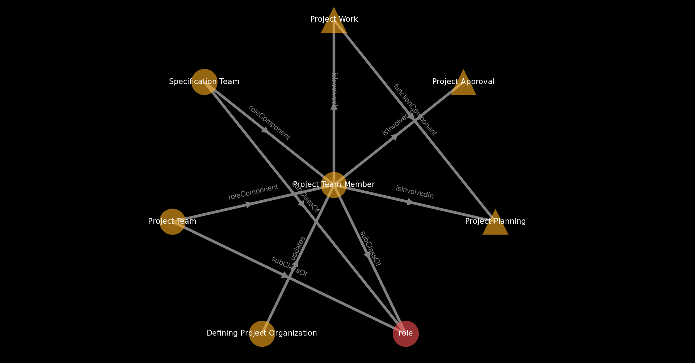

SNIK Graph Manual

Context Menu
Right click on a node/edge to open the context menu and choose among:
Basic Menu Items
Description
Opens the node in an RDF browser, which shows all its properties and values.
Star
Highlights the node and all its directly connected nodes.

Incoming Star
Highlights the node and all neighbours directly connected via incoming edges.
Outgoing Star
Highlights the node and all neighbours directly connected via outgoing edges.
Path
Shortest Path between a selected source and this node.
Spiderworm
The Spider Worm consists of the shortest path between a selected source and this node plus all direct neighbours. Displaying a spiderworm hides all other nodes and edges.

Edit
If you are a domain expert and notice incorrectly modelled facts or connections of a node, feel free to send us an issue.
Combine Close Matches
Merge equivalent classes from different subontologies.
Class Use
Visualize the interplay of role, function and entity type (related to the Meta model).
Hide
Hide the selected item until the view is resetted.
Set Path-source
Set the starting point for path operations.
Confirm Link
Confirm that the automatically generated interlink is correct.
Developer Mode
Additional context menu entries for developers.Remove Permanently
Send us an issue to delete the selected item permanently. Also removes it until graph is reloaded.
Ontowiki
Access restricted ontology editing tool.
Debug
Get debug information to the edge/node from the JSON File
Extended Mode
Additional context menu entries for power users.Doublestar
The double star is like the spiderworm but shows connected nodes for both source and target, not just the target.

Starpath
Creates a path and star every node along it.

Circlestar
A star using a circular layout.

Lodlive
Third party data visualization exploration tool.
Menu
File
Holds different file options like loading and saving the graph in different ways.
Load Graph File With Layout
Discard the currently loaded graph and load a new one from a Cytoscape file.
Load Layout
Keep the currently loaded graph but load the position from those nodes from a layout file. Only works for nodes whose identifiers are contained in the file.
Load From SPARQL Endpoint
Discard the currently loaded graph and load all ontologies of SNIK.
Save Session
Save the complete graph (visible and hidden) to a Cytoscape file.
Save Visible Graph With Layout As Cytoscape File
Save the currently visible subgraph to a Cytoscape file.
Save Layout Only
Save the positions all nodes in the graph to a layout file.
Recalculate Layout And Replace In Browser Cache
Recalculate the position of all visible nodes. May take a while when a large number of nodes are visible.
Save Image Of Current View
Save a screenshot of the current view.
Save Image Of Whole Graph
Save an image of the whole graph with the same pixel density as the current view.
Save Image Of Current View (high Res)
Save an image of the current view with a high resolution, for example for printing.
Save Image Of Whole Graph (high Res)
Save an image of the whole graph with a high resolution, for example for printing.
Filter
A collection of filters to display relevant subgraphs.
Meta
The Meta Ontology provides common superclasses and relations for the subontologies of SNIK.
Bb
Based on the book "Health Information Systems Ontology–Architectures and Strategies".
Ob
Based on the book "IT-Projektmanagement im Gesundheitswesen - Lehrbuch und Projektleitfaden".
He
Based on the book "Informationsmanagement: Grundlagen, Aufgaben, Methoden".
Ciox
Based on interviews about the Health Information System with Department B1, the Department for Information Management, of the Uniklinikum Leipzig.
Role
Who...
Function
...does what...
Entitytype
...and which information is therefore needed.
Options
Here you can find different checkboxes that toggle the behaviour of SNIK GraphHere you can find different checkboxes that toggle the behaviour of SNIK Graph
Separate Subontologies
Spread the SNIK Graph into subgraphs of the subontologies.
Cumulative Search
Keep previous search results visible when searching again.
Day Mode
White background. Saves ink when printing.
Developer Mode
Additional context menu entries for developers.
Extended Mode
Additional context menu entries for power users.
Combine Matches
Highlights groups of classes representing the same concept from different subontologies (matches) by placing them in boxes. Use "move matches on top of each other" or "move matches nearby" to shrink those boxes.
Layout
This part of the menu holds the layout features.
Show Close Matches
Shows (unhides) all nodes that are connected via close matches to visible nodes.
Recalculate Layout
Hotkey: Ctrl+Alt+L. Recalculates the position of all selected nodes, or all visible nodes if there are not at least two selected nodes. Can take a while if there are many visible nodes.
Tight Layout
Hotkey: Ctrl+Alt+T. You can use this for a more narrow view.
Compound Layout
Hotkey: Ctrl+Alt+C. Layout that tries to places combined matches next to each other.
Reset View
Resets all the layout operations to get you back to the starting point of the visualization.
Move Matches On Top Of Each Other
Requires enabled "Combine Matching" option. Places all matching nodes in the center of their group.
Move Matches Nearby
Requires enabled "Combine Matching" option. Places all matching nodes in a small circle in their group.
BB Chapter Search
Presents you all chapters of the "blue book" and lets you build a subgraph out of selected chapters .
OB Chapter Search
Presents you all chapters of the "orange book" and lets you build a subgraph out of selected chapters .
Services
Other ways to access SNIK.
SPARQL Endpoint
Expert interface for the SPARQL Protocol and RDF Query Language endpoint.
RDF Browser
Browse complete descriptions of classes in the RDF browser.
Language
Language switch, you can choose between English, German and Persian. Ontologies may not or not fully support all available languages.
Help
Common Help Menu, holds e.g. this manual
Search Field
Search for classes by entering a full or partial name.